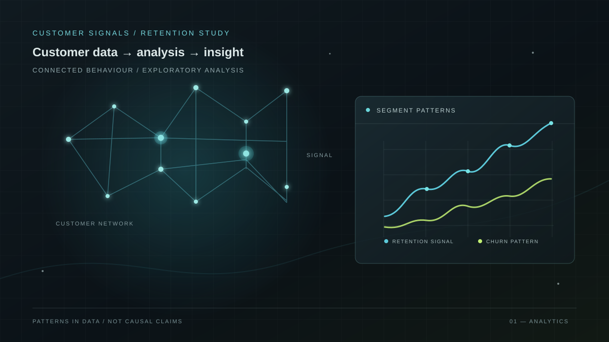
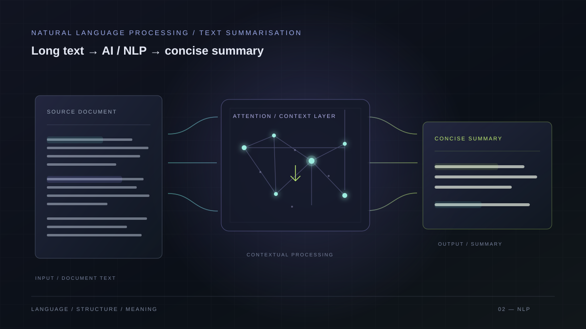
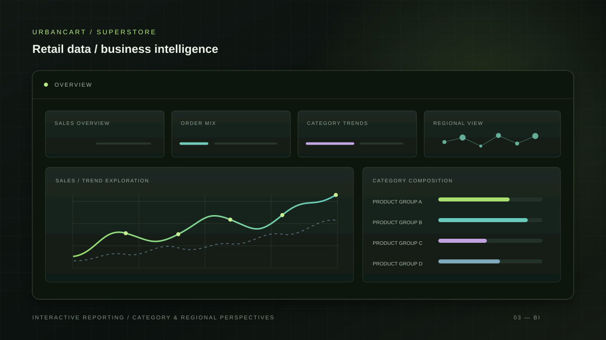
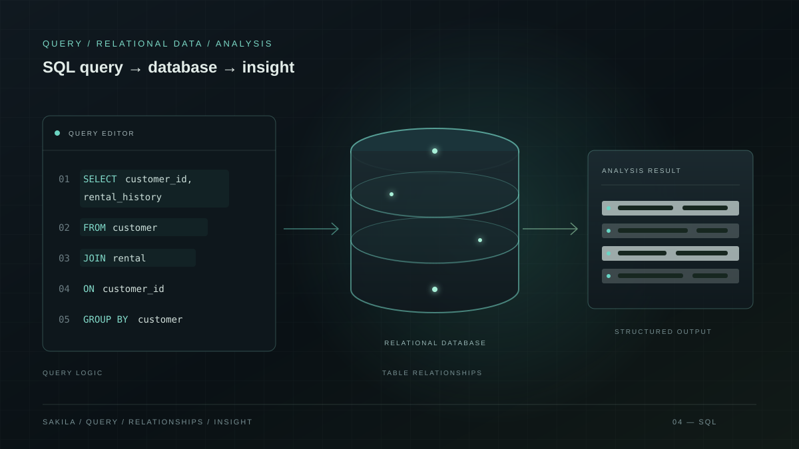

Data • AI • Machine Learning
Aman
Mehra
Machine Learning AI Data Analytics
MSc Artificial Intelligence graduate building practical projects across data analytics, machine learning and artificial intelligence.
Open to Data & AI opportunities
NEURAL NETWORK01 / 04
LATENT SPACE SPATIAL MAPPING
NETWORK CONNECTED
01 / About
About me
A curious, analytical approach
Turning data into insights,
and ideas into intelligent systems.
I completed an MSc in Artificial Intelligence at Sheffield Hallam University in 2025, following a Bachelor of Computer Applications at Punjabi University Patiala. I am interested in how data and AI can answer practical questions.
My project work includes a transformer-focused text summarisation dissertation, exploratory analysis of customer churn in Python, and an inventory management system built with Python and SQL. I am developing skills across data analytics, machine learning, artificial intelligence, NLP and business intelligence.
- 01 / Education
- MSc Artificial Intelligence Sheffield Hallam University
- 02 / Foundation
- BCA Punjabi University Patiala
- 03 / Focus
- Machine Learning AI · Data Analytics
02 / Skills
AI capability map
Tools and techniques I have working knowledge of through my MSc studies and personal projects.
Machine learning
AI / NLP
Business intelligence
Tools
A considered process
From data to insight
Turning raw information into a clearer view of the question.
- 01Raw data
- 02Clean
- 03Explore
- 04Analyse
- 05Model
- 06Insight
03 / Projects
Selected projects
A selection of practical work across data analysis, business intelligence and artificial intelligence.

OBSERVED CHURN / CONTRACTTELCO EDA
MONTH-TO-MONTH~42%
ONE YEAR~11%
TWO YEAR~3%
Observed rates in this dataset · association, not causation
Customer Churn Analysis
Exploratory analysis of a Telco customer dataset, examining patterns associated with churn across tenure, contract type, internet service, payment method and monthly charges.

NLP / TEXT SUMMARISATION↓
LONG-FORM TEXT → CONCISE SUMMARY
AI Text Summarisation
MSc dissertation exploring text summarisation with a focus on transformer architectures.

URBANCART / SUPERSTOREPOWER BI
DASHBOARD / DATA VISUALISATION
UrbanCart Superstore Dashboard
A superstore dashboard project using Power BI and Excel, focused on data visualisation.

QUERY / ANALYSIS01SELECT fields02FROM dataset03WHERE question04GROUP BY category
SQL / BUSINESS ANALYSIS
04 / Experience
Experience
-
DATA ANALYTICS VIRTUAL INTERN
Forage – Quantium
- Analysed transaction and customer purchase behaviour data to identify purchasing patterns across demographic and customer segments.
- Evaluated brand, product and pack-size performance to identify high-performing SKUs and support data-driven category recommendations.
- Conducted trial-versus-control store analysis to assess the impact of category interventions and identify meaningful performance differences.
- Communicated analytical findings through a stakeholder-ready report, translating data insights into clear commercial recommendations.
-
DATA ANALYTICS VIRTUAL INTERN
Forage – Deloitte Australia
- Cleaned and transformed raw JSON telemetry data into structured, analysis-ready datasets for operational reporting.
- Built an interactive Tableau dashboard to analyse machine downtime across global manufacturing facilities and present operational trends clearly.
- Analysed gender pay equality data using Excel and descriptive statistical techniques to identify patterns and disparities.
- Presented findings through concise, stakeholder-focused reporting, translating technical analysis into clear business insights.
05 / Education
Education
MSc Artificial Intelligence
Sheffield Hallam University
Dissertation: “Text Summarization Using Transformers Architecture”
BCA — Bachelor of Computer Applications
Punjabi University Patiala
Grade: 70%
06 / Contact
Let’s build something
intelligent.
I’m open to opportunities in Data Analytics, Business Intelligence, Artificial Intelligence and Machine Learning. Feel free to get in touch regarding relevant roles, projects or professional opportunities.